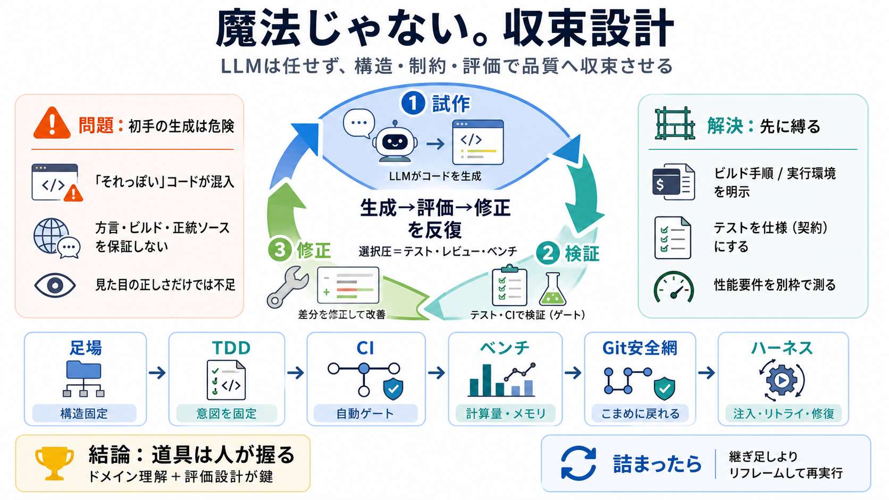

COVER
02 / 14
魔法じゃない。収束設計
LLM開発を
縛って
進める
エージェント的ループ（試作→検証→修正）を、TDD・Git・CI・ハーネスで“成果物の品質へ収束”させる実務ワークフロー。
主張
LLMは任せず、
収束
させる
収束（convergence）/ 漸近的に正解へ
方法
構造・制約・評価を先に用意
足場（scaffold）/ 曖昧さを封じる
前提
失敗の多くは文脈・性能・運用
方言/ビルド/正統性/計算量
PROBLEM
03 / 14
初手の生成は危険
「それっぽい」が混入する
LLMは初手から大量のコードを出しがちで、手書き開発と逆に「出てきたものを削り、必要な構造へ合わせる」が有効になる。
よくある罠
見た目の正しさ（動きそう）
見た目→構造ズレの温床
本質の問題
環境固有の事情を保証できない
方言/ビルド手順/正統なソース
METAPHOR
04 / 14
ジェネティックに回す
LLM×反復＝
収束探索
エージェントループは、ジェネティックアルゴリズムに似ていて「生成→評価→修正」を繰り返し、出力を選択圧（テスト等）へ適合させる。
i
試作（LLM生成）
ii
検証（テスト/レビュー）
iii
修正（差分で収束）
ARCHITECTURE
05 / 14
縛る設計が速度を作る
勝負は
制約
と
足場
失敗を減らすには、曖昧な命令を避け、構造・制約・評価基準を言語化して先に固定する（LLMの自由度を落とす）。
明示するもの
ビルド手順 / 実行環境 / 正統なソース所在
守るべき底
型推論の根本判断 / 性能要件（計算量）
PROCESS
06 / 14
TDDで契約化する
テストは
仕様
になる
テストを先に整えると、LLMにとっての“契約（選択圧）”になり、失敗フィードバックで意図した振る舞いへ収束しやすくなる。
i
回帰防止
ii
意図の固定
iii
修正の方向づけ
用語：
TDD
（Test-Driven Development / テスト駆動開発）・
CI
（継続的インテグレーション）
EVIDENCE
07 / 14
性能は別で測る
ベンチマークを
同時
に
機能テストは“動くか”中心になりがちで、CPU/メモリや計算量の悪化は見えにくい。LLMは遅い実装を出し得るため別枠で抑える。
機能
正しさ（回帰・仕様一致）
性能
計算量・レイテンシ・メモリ
例：定数時間→逐次処理は禁物
COMPARISON
08 / 14
削る開発が速い
“任せる”より“整形”する
LLM生成はそのまま採用するとズレが増えるため、通常開発とは逆に「出てきたものを削り、必要な構造へ合わせる」運用が効く。
従来（手書き）
必要な構造を作ってから埋める
LLM開発
生成を素材にし、差分で矯正する
キーワード：
スキャフォールド（足場）
/
構造の固定
/
曖昧さ回避
ENUMERATION
09 / 14
Gitで探索を安全に
安全網＝
コミット
LLMは試行錯誤を安くできる一方、戻れない探索は危険。安定状態ごとに即コミットし、破綻時はリスタートできるようにする。
i
安定時：こまめにコミット
ii
破綻時：最初からやり直す
iii
差分でレビュー
DISTINCTION
10 / 14
失敗を“底”で防ぐ
見た目ではなく
契約
「動いて見える」だけでは不十分で、型推論や計算量など“根本の設計判断”を評価と制約で守る必要がある。
NG
見た目の整合性だけに依存
括弧ズレ等の単純事故も混ざる
OK
テスト・レビュー・性能で守る
仕様と制約をゲート化
ARCHITECTURE
11 / 14
ハーネス＝運用の中枢
エージェントを部品化する
ハーネスは、モデルの癖や不完全さを前提に、タスク分割・コンテキスト注入・失敗時リトライ・機械的修復などを担う実行基盤。
前後制御
呼び出し前：制約/注入
呼び出し後：差分確認/ゲート
機械的修復
括弧不一致の補正など
例：Markdownの脆さをDBで補う発想
PROCESS
12 / 14
泥沼はリフレーム
継ぎ足しより
再実行
追加修正がkludge（泥沼の継ぎ足し）になり、根本の設計適合性が怪しくなったら、問題設定から見直して最初から再実行する。
i
現状：回せてない兆候
ii
症状：設計適合の欠如
iii
対応：リフレームして再走
用語：
kludge
（場当たり的な継ぎ足し）
CLOSING
13 / 14
道具は人が握る
LLMは“当たり外れ”を減らせる
ただし鍵はモデルではなく、
ドメイン理解
と
評価設計
。 テスト・ベンチ・Git・ハーネスで収束を作れば、実装速度と品質を両立できる。
Checklist
制約/足場 → TDD → CI → ベンチマーク → Git安全網 → ハーネス
期待できる効果
品質の収束 / 失敗コストの制御 / 性能リスクの早期発見
REFERENCES
14 / 14
References
No references found